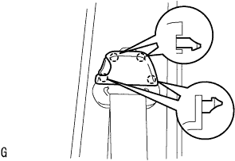

Quota window Assisted |
| 1. Cleaning Quota Window ASSY RH |
Remove the pin and spacer.(When the glass is reused)
Use a scraper to cut off the remaining adhesive.(When the glass is reused)
 |
Clean the glass outer periphery with white gasoline.
| 2. Installation of quota window glass spacer |
Apply a dedicated primer to the spacer and the pin mounting part.
Attach a quota window glass spacer and pin to the position of the figure.
| 3. Quota window Assisted |
Body mounting face cleaning
 |
If the adhesive on the vehicle side is remarkably uneven, smooth with a knife.
Work before glass installation
Put the suction rubber on the glass.
The glass is placed on the body, and the width of the glass is uniform (the gap between the body and the glass end surface is uniform).
Put the gum tape etc. on the glass and the body panel part, and mark the match when installing it with a pen.(New article)
Take off the glass.
Apply a dedicated primer to the part where the body surface on the vehicle is exposed (no adhesive remains).
Apply a dedicated primer to the glass adhesive as shown in the figure.

Set the adhesive on the sealant gun.
Apply the adhesive into a bead as shown in the figure.
Glass installation
Use suction rubber to match the matching mark and attach the glass.
Press the front of the glass lightly to completely adhere.
Fix the adhesive protruding and deficiency with a spatula.
Press the glass with a protective tape until the adhesive is cured.
Extra adhesive is removed before hardening.
| 4. Water leak inspection and repair |
After the adhesive, confirm that there is no leakage.
In the event of a leak, the three cement black is applied after drying.
| 5. Mounting on the center pillar garnish RH |
 |
Match the center pillar ganitsu shu RH and attach RH.
| 6. Long -seat ota -albtown assigned to RH |
ELR locking tilt angle inspection
 |
When the retractor is moved quietly from the attached state, check that the belt lock does not lock within 15 ° in the entire direction, and that the locking state is maintained at 45 ° or more.
With two bolts, temporarily tighten the retractor of the front seat outa belt asy RH.
The retractor part of the front seat oterty rh is tightened in the order of upper → lower part.
In the bolt, attach the choodanka part of the front seat Otabelt Asy RH.
 |
Connect the connector (for plitency) and lock the locking button.
ELR lock inspection
When the seat belt is quickly pulled out in the vehicle mounting state, confirm that the seat belt locks.
| 7. Seat belt anka cover cap installation |
|  |
Combine the claws and attach the seat belt anka cover cap.
| 8. Roof side garnish Inn RH installation |
 |
Pull the garnishille toward the inside of the vehicle, remove the clip, and remove the roof side -inanaganish RH.
| 9. Deck Trim Side Panel ASSY RH installation |
 |
Make the deck trim side panel ASSY RH by combining the clots and claws.
| 10. Side No.1 Trim ASSY RH installation |
 |
Attach the clip and claws and attach the side No.1 trim ASSY.
| 11. Rear seat 3 point type belt Assy Out RH installation (floor anka part) |
Tighten the rear seat 3 point type belt ASSY OUT RH (floor anka part) with bolts.
| 12. Front sheet outa belt assessed (floor anka part) |
In the bolt, attach the front seat Otabelt Assy RH floor anka.
| 13. Lap belt Otanka cover installation |
 |
Combine the claws and attach the wrap belt Otanka cover.
| 14. Backdoor scuff plate installation |
 |
Combine the claw position on both ends, and attach the critpo to attach a squishy ascatif plate.
| 15. Installation of the rear floor carpet |
| 16. Spair wheel cover ASSY installation |
| 17. Backdoor with the strip installation |
 |
The backdoor weather strip is attached to combine the paint mark (white and green, one in one place) and the weather strip instruction (arrow part) on the body side.
| 18. Front door opening trim Weather strip RH installation |
 |
Combine the paint mark of the Weather Strip (white, one place) and attach the front door opening trimweather stretup RH.
| 19. Cowl side trim board RH installation |
 |
Push the clip in front of the vehicle and attach the cowl side trim board RH.
| 20. Front doorskuff plate RH installation |
 |
The claws at the front and rear ends are used.
Make the claws and attach the front door scuff plate RH.
| 21. Lear seat cushion assessed |
Lock the front side of the rear seat cushion Assy is locked by the rear seat cushion lock striker.
Pass the rear seat belt through the rear seat cushion cover and pad back rubber band.
 |
At the bolt, attach the rear seat hinge LH.
Attach a snap ring to the rear seat back hinge RH.
The rear seat hinge RH is inserted into the corner pipe of the rear seat cushion Assy right bracket.
| 22. Lear seat back Assisted Assy LH installation |
Attach the rear seat back with two bolts.
 |
Attach two clips.
| 23. List of rear seat back Assigned to RH |
Attach the rear seat back with two bolts.
Attach two clips.
| 24. List of back hinge SUB-ASSY RH installation |
 |
With a bolt, tighten the rear seat Batsuku hinge RH.
| 25. Lear seat cushion Assy installation |
Rena seat cushion assemble the hook at the rear of the rear seat.
Pass the rear seat belt through the rear seat cushion cover and pad back rubber band.
 |
Rena seat cushion Assy The hook at the front of the front.
| 26. List of rear seat back Assisted |
Attach the rear seat back associate with two bolts.
 |
Attach two clips.